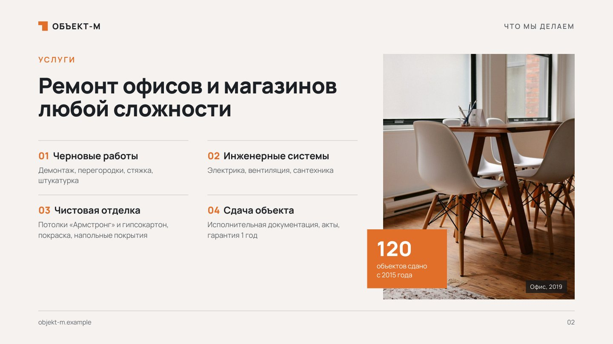
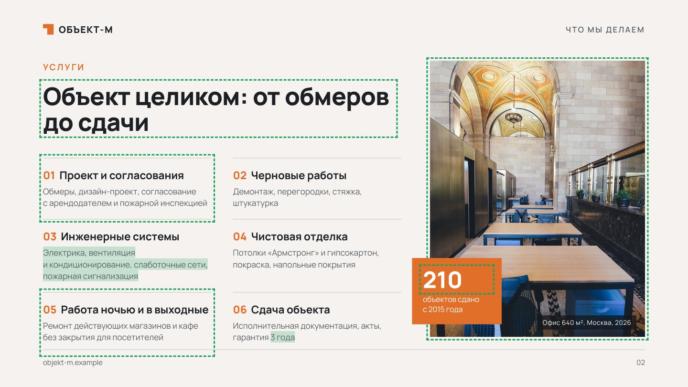
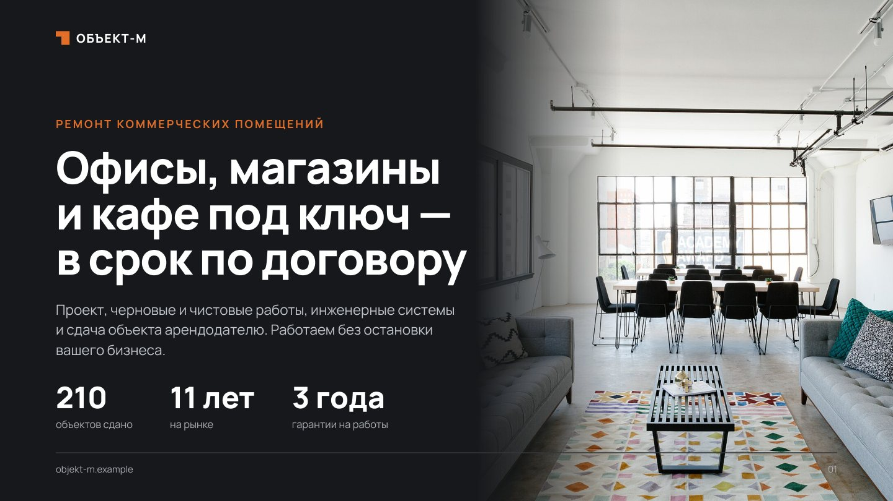
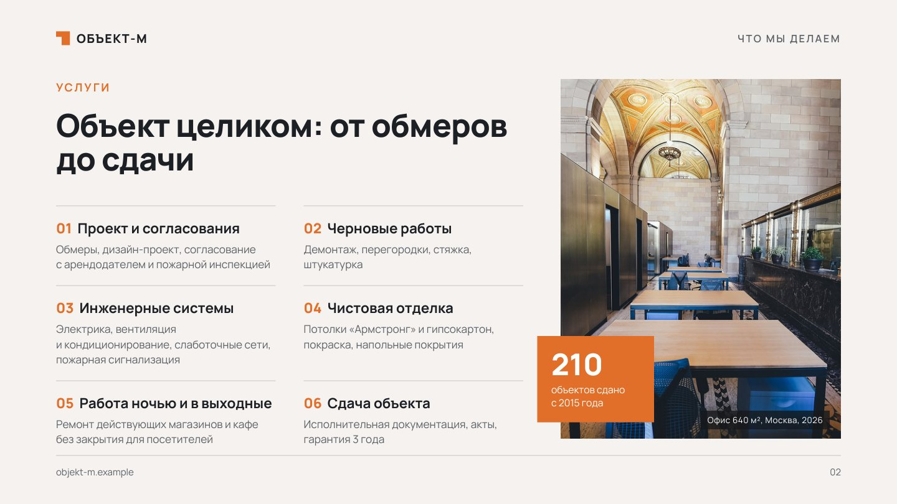
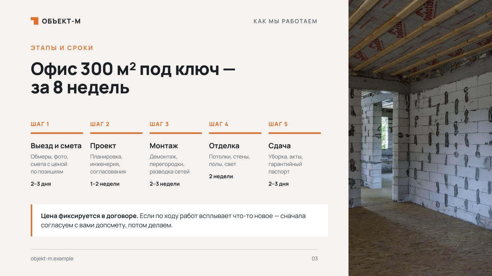

Обновление презентации о ремонте коммерческих помещений
Компания «ОБЪЕКТ-М» и все тексты вымышленные. Показано, как обновляется готовая презентация: дизайн тот же, меняются тексты, цифры и фото, добавляются новые слайды в том же стиле.
Скачать PDF (3 слайда)Было → стало: один и тот же слайд
Шаблон не тронут: те же шрифты, сетка, цвета и места под фото. Зелёной рамкой отмечено, что поменялось по «ТЗ»: новый заголовок, две новые услуги, обновлённые цифры и свежее фото объекта.


Слайды целиком



Как будет с вашей презентацией
- Работаю прямо в вашем .ppt: дизайн, шрифты и расположение блоков не меняю.
- Тексты переношу из ТЗ слайд за слайдом, подгоняю, чтобы ничего не вылезало и не сжималось.
- Ставлю ваши фото объектов; где нужно — делаю реалистичные картинки нейросетью под тему слайда, без абстракций.
- Сдаю обновлённый .pptx и PDF.